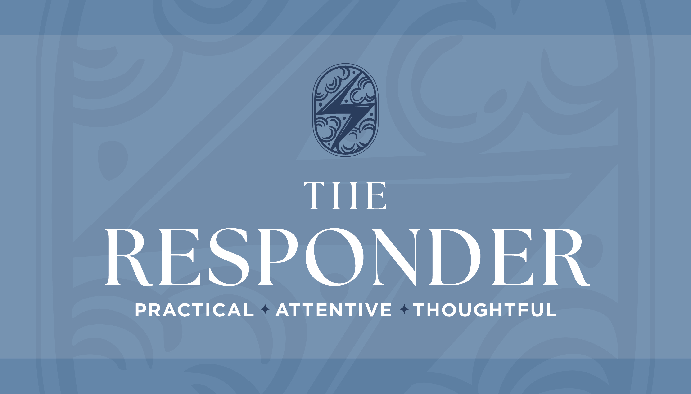
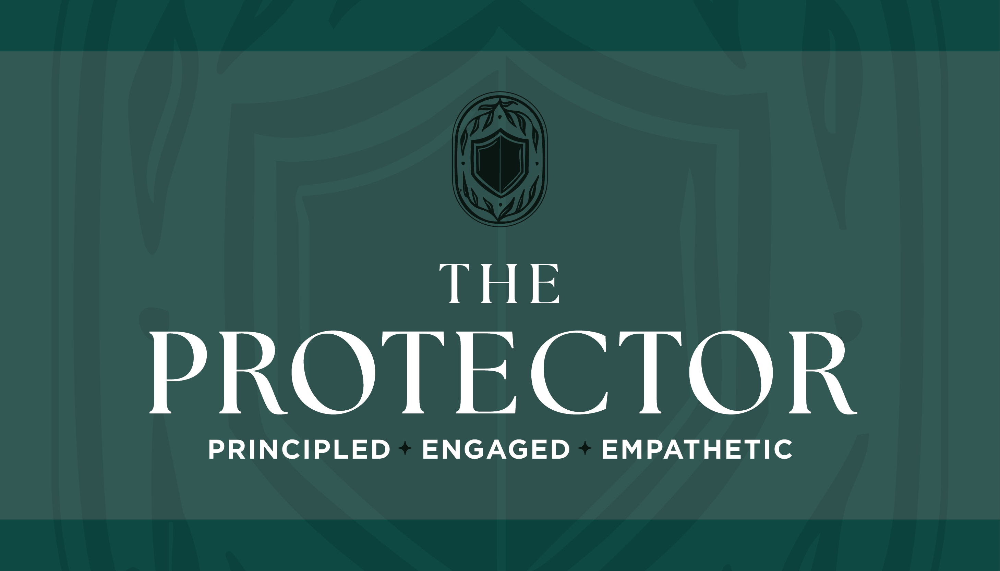
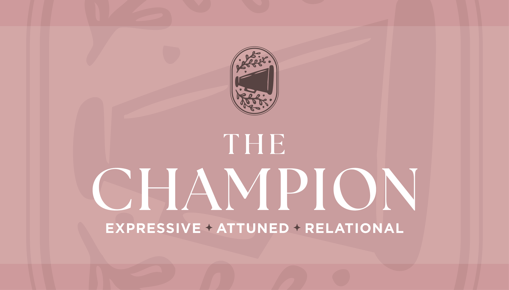
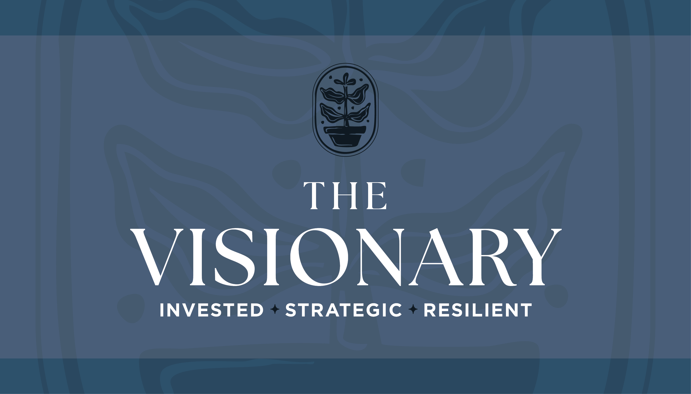
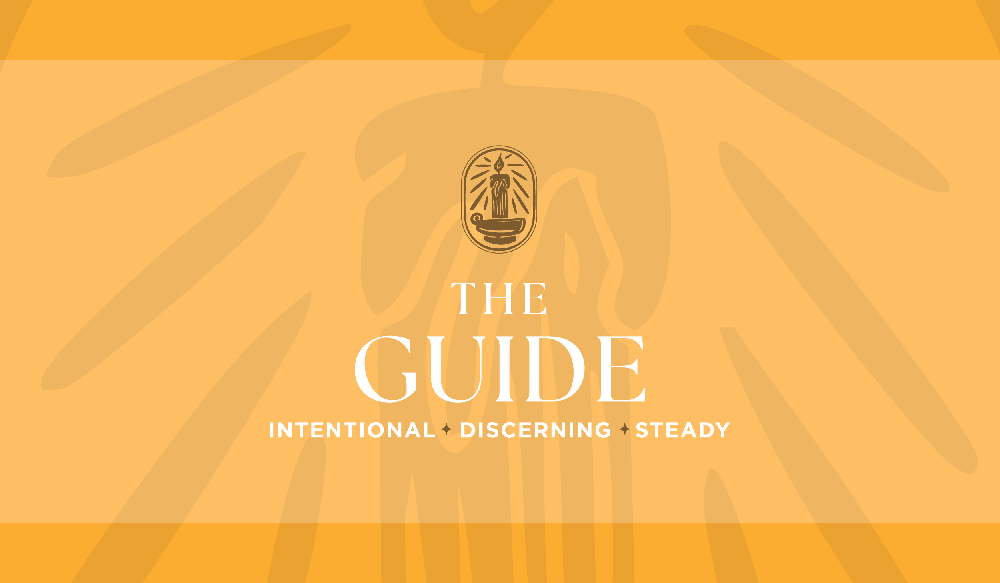

You're watching a movie or reading a novel. Which moment in a story gets you every time?
Question 2 of 7
A new family moves in next door. What's the first thing you do?
Question 3 of 7
Every friend group has "that person." Which role do you usually end up in?
Question 4 of 7
Be honest — what's a frustrating thought you've had about people in general before?
Question 5 of 7
You overhear someone saying something nice about you. Which compliment would mean the most to you?
Where Is God Drawing Your Attention?
These questions help us personalize your follow-up content. They do not affect your profile result.
Question 6 of 7
In this season, where do you sense Him drawing your attention?
Question 7 of 7
When you think about other places, where do you feel stirred to step in and help? (Choose all that apply.)
Get Your Full Results
Enter your info to receive your full Compassion Profile results and a personalized five-day devotional.

You notice needs quickly and move toward them without hesitation. Whether someone is hurting, celebrating, or simply in need of support, you step in with care, presence, and practical help. You don't wait to be asked. You respond.
Biblical Anchor: Tabitha
There's more for you.
Check your email for your full results + a five-day devotional made for you.
What Tabitha's story reveals about your compassion
The tension you may be carrying and how to bring it before God
Your next step for living this out right now

You're the one who notices when something isn't right. When someone is in a vulnerable situation, dismissed, or at risk, something in you rises up. You don't walk away from people who need someone in their corner. You step in, you speak up, and you stay.
Biblical Anchor: Esther
There's more for you.
Check your email for your full results + a five-day devotional made for you.
What Esther's story reveals about your compassion
The tension you may be carrying and how to bring it before God
Your next step for living this out right now

You're the one who names what others won't. When something moves your heart, you can't stay quiet. You help people understand what's happening, why it matters, and what they can do — through your words, your relationships, and the way you tell a story.
Biblical Anchor: Deborah
There's more for you.
Check your email for your full results + a five-day devotional made for you.
What Deborah's story reveals about your compassion
The tension you may be carrying and how to bring it before God
Your next step for living this out right now

You're the one who sees what could be. When something is broken, you don't just feel sad about it — you start thinking about how to fix it. You care about lasting change, not quick fixes, and you're willing to stay in a hard place long enough to see something new take shape.
Biblical Anchor: Lydia
There's more for you.
Check your email for your full results + a five-day devotional made for you.
What Lydia's story reveals about your compassion
The tension you may be carrying and how to bring it before God
Your next step for living this out right now

You pay attention to people. You care deeply about spiritual growth and create space for discipleship and community. You notice what God is doing in someone and help draw it out, offering encouragement and truth so they can step into what God is calling them to do.
Biblical Anchor: Priscilla
There's more for you.
Check your email for your full results + a five-day devotional made for you.
What Priscilla's story reveals about your compassion
The tension you may be carrying and how to bring it before God